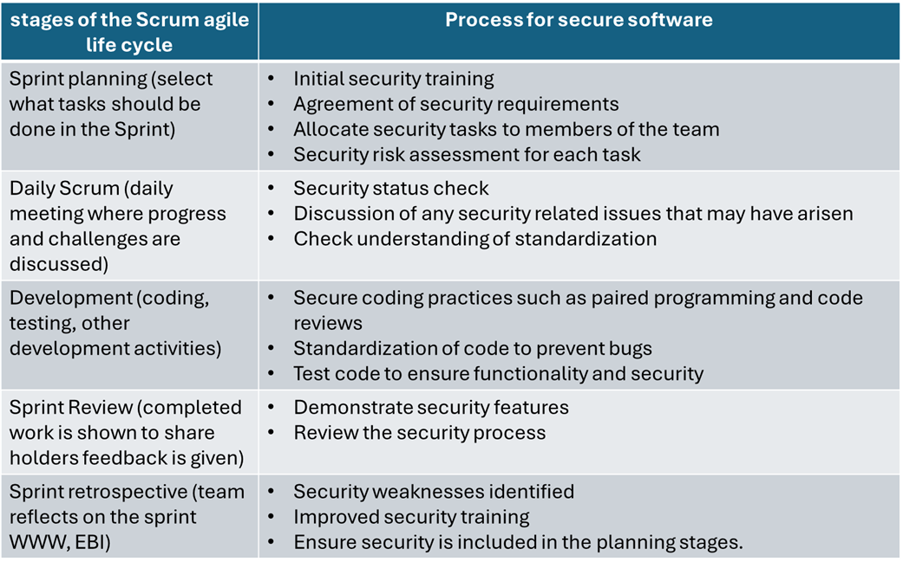

Unit 2: Seminar Preparation
Task 1
Task 1: Scrum Security review

References:
Sharma, Amit & Bawa, R. (2020). Identification and integration of security activities for secure agile development. International Journal of Information Technology. 14. DOI: 10.1007/s41870-020-00446-4.
Task 2
Select five terms from ISO/IEC Standard 27000 Section 3 Terms and Definitions and write a 300-word blog post on how people can be managed to overcome cyber security attacks from the inside.
5 terms:
3.39 level of risk- magnitude of a risk (3.61) expressed in terms of the combination of consequences (3.12) and their likelihood (3.40)
3.69 risk management- coordinated activities to direct and control an organization (3.50) with regard to risk (3.61)
3.2 attack- attempt to destroy, expose, alter, disable, steal or gain unauthorized access to or make unauthorized use of an asset
3.13 continual improvement- recurring activity to enhance performance (3.52)
3.20 effectiveness- extent to which planned activities are realized and planned results achieved
References:
ISO. (2018) ISO/IEC 27000:2018(en) Information technology Security techniques Information security management systems Overview and vocabulary. Available from: https://www.iso.org/obp/ui/#iso:std:iso-iec:27000:ed-5:v1:en [Accessed 6th August 2024]
References:
- ISO. (2018) ISO/IEC 27000:2018(en) Information technology Security techniques Information security management systems Overview and vocabulary. Available from: https://www.iso.org/obp/ui/#iso:std:iso-iec:27000:ed-5:v1:en [Accessed 6th August 2024]
- Leaf. (2024) 10 Ways to Prevent Cyber Attacks. Available from: https://leaf-it.com/10-ways-prevent-cyber-attacks/ [Accessed 6th August 2024]
- National Cyber Security Centre. (2016) Common Cyber Attacks: Reducing the Impact. Available from: https://www.ncsc.gov.uk/guidance/white-papers/common-cyber-attacks-reducing-impact [Accessed 6th August 2024]